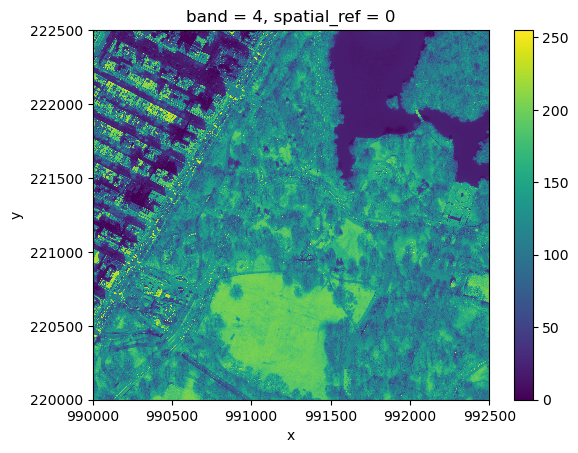
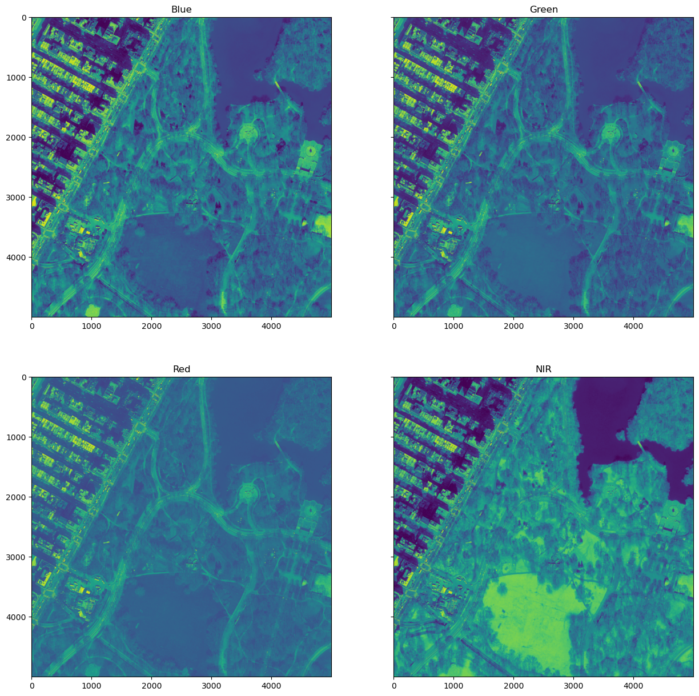
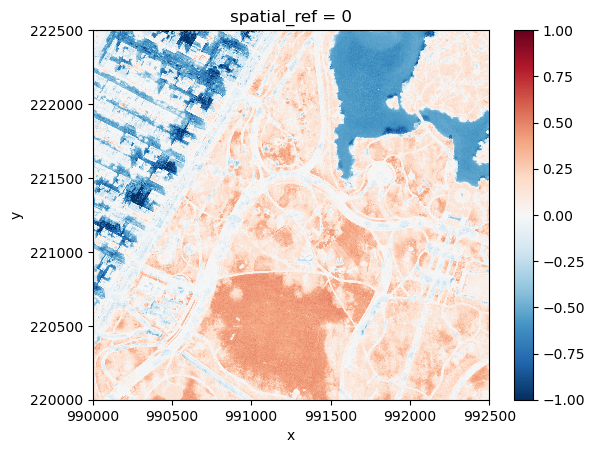
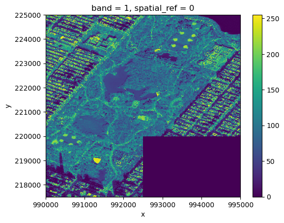
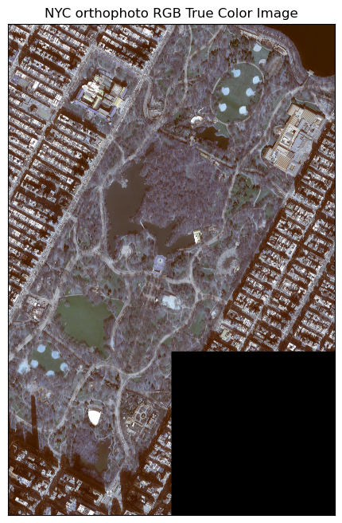
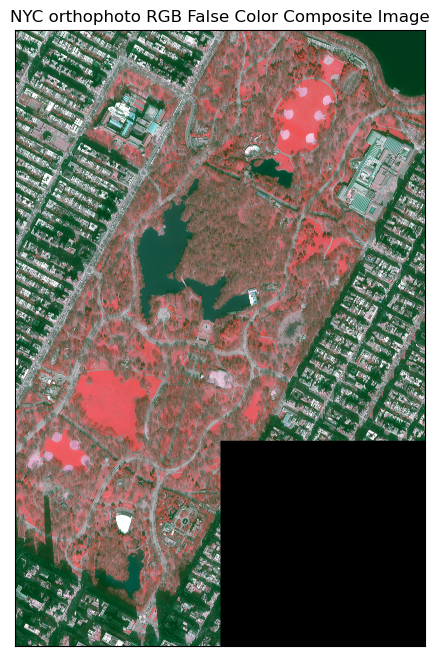
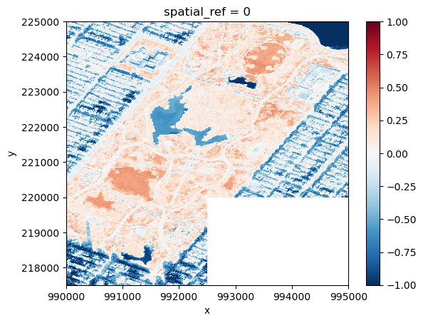

import xarray as xr
import rioxarray as rxr
from rioxarray.merge import merge_arrays
import dask as dask
import earthpy.plot as ep
from rasterio.plot import show
import os
from glob import glob
import geopandas as gpd
import pandas as pd
import matplotlib.pyplot as plt
%matplotlib inline
C:\Users\Wenge\miniforge3\envs\sds\Lib\site-packages\earthpy\__init__.py:7: UserWarning: pkg_resources is deprecated as an API. See https://setuptools.pypa.io/en/latest/pkg_resources.html. The pkg_resources package is slated for removal as early as 2025-11-30. Refrain from using this package or pin to Setuptools<81.
from pkg_resources import resource_string
os.chdir(r'C:\Users\Wenge\Dropbox (Hunter College)\Teaching\GTECH\331&731\2025F_331&731\data\ortho\boro_manhattan_sp24')
nyc_sh = gpd.read_file('24_b_manhattan_l06_4bd.shp')
nyc_sh.explore(column='Image')
nyc_sh.explore()
#nyc_sh
---------------------------------------------------------------------------
FileNotFoundError Traceback (most recent call last)
Cell In[2], line 1
----> 1 os.chdir(r'C:\Users\Wenge\Dropbox (Hunter College)\Teaching\GTECH\331&731\2025F_331&731\data\ortho\boro_manhattan_sp24')
2 nyc_sh = gpd.read_file('24_b_manhattan_l06_4bd.shp')
3 nyc_sh.explore(column='Image')
FileNotFoundError: [WinError 3] The system cannot find the path specified: 'C:\\Users\\Wenge\\Dropbox (Hunter College)\\Teaching\\GTECH\\331&731\\2025F_331&731\\data\\ortho\\boro_manhattan_sp24'
os.chdir(r'C:\Users\Wenge\Dropbox (Hunter College)\Teaching\GTECH\331&731\2025F_331&731\data\ortho\boro_manhattan_sp24')
cwd = os.getcwd()
print(cwd)
fpi = glob(os.path.join(cwd,'990220.jp2'))
print(fpi[0])
#img = rxr.open_rasterio(fpi[0], masked=True,parse_coordinates=False )
nyc = rxr.open_rasterio(fpi[0], masked=True)
C:\Users\Wenge\Dropbox (Hunter College)\Teaching\GTECH\331&731\2025F_331&731\data\ortho\boro_manhattan_sp24
C:\Users\Wenge\Dropbox (Hunter College)\Teaching\GTECH\331&731\2025F_331&731\data\ortho\boro_manhattan_sp24\990220.jp2
print(nyc.rio.crs)
print(nyc.rio.count)
print(nyc.rio.width)
print(nyc.rio.height)
EPSG:6539
4
5000
5000
img[3].plot()
<matplotlib.collections.QuadMesh at 0x22247e36350>

# place multibands next to each other
# Initialize subplots
fig, ((ax1,ax2),(ax3,ax4)) = plt.subplots(ncols=2, nrows=2, figsize=(15, 15), sharey=True)
# Plot Red, Green and Blue (rgb)
show((nyc[0]), ax=ax1)
show((nyc[1]), ax=ax2)
show((nyc[2]), ax=ax3)
show((nyc[3]), ax=ax4)
# Add titles
ax1.set_title('Blue')
ax2.set_title('Green')
ax3.set_title('Red')
ax4.set_title('NIR')
Text(0.5, 1.0, 'NIR')

ndvi = (nyc[3]-nyc[2])/(nyc[3]+nyc[2])
ndvi.plot()
<matplotlib.collections.QuadMesh at 0x2224e0cbb10>

os.chdir(r'C:\Users\Wenge\Dropbox (Hunter College)\Teaching\GTECH\331&731\2025F_331&731\data\ortho\boro_manhattan_sp24')
cwd = os.getcwd()
print(cwd)
# Get all surface reflectance bands
fp0 = glob(os.path.join(cwd,'*.jp2'))
#print(fp)
#fp = fp0[0:5]
#fp = ['990217.jp2','990220.jp2','992220.jp2','990222.jp2','992222.jp2','992225.jp2','995225.jp2','995227.jp2']
fp = ['990217.jp2','990220.jp2','992220.jp2','990222.jp2','992222.jp2']
image = []
for fpi in fp:
fp0 = glob(os.path.join(cwd,fpi))
print(fp0)
img = rxr.open_rasterio(fp0[0], masked=True, chunks={'x': 2048, 'y': 2048})
# img = rxr.open_rasterio(fp, masked=True)
image.append(img)
nyc = merge_arrays(image)
print(nyc.shape)
print(nyc.rio.crs)
print(nyc.rio.bounds())
C:\Users\Wenge\Dropbox (Hunter College)\Teaching\GTECH\331&731\2025F_331&731\data\ortho\boro_manhattan_sp24
['C:\\Users\\Wenge\\Dropbox (Hunter College)\\Teaching\\GTECH\\331&731\\2025F_331&731\\data\\ortho\\boro_manhattan_sp24\\990217.jp2']
['C:\\Users\\Wenge\\Dropbox (Hunter College)\\Teaching\\GTECH\\331&731\\2025F_331&731\\data\\ortho\\boro_manhattan_sp24\\990220.jp2']
['C:\\Users\\Wenge\\Dropbox (Hunter College)\\Teaching\\GTECH\\331&731\\2025F_331&731\\data\\ortho\\boro_manhattan_sp24\\992220.jp2']
['C:\\Users\\Wenge\\Dropbox (Hunter College)\\Teaching\\GTECH\\331&731\\2025F_331&731\\data\\ortho\\boro_manhattan_sp24\\990222.jp2']
['C:\\Users\\Wenge\\Dropbox (Hunter College)\\Teaching\\GTECH\\331&731\\2025F_331&731\\data\\ortho\\boro_manhattan_sp24\\992222.jp2']
(4, 15000, 10000)
EPSG:6539
(990000.0, 217500.0, 995000.0, 225000.0)
#nyc[0].where(nyc[0]!=nyc[0].rio.nodata).plot()
nyc[0].plot()
<matplotlib.collections.QuadMesh at 0x2225cc27390>

ep.plot_rgb(nyc.values, figsize = (10, 8),
rgb=[2, 1, 0], stretch = True, str_clip =1,
title="NYC orthophoto RGB True Color Image")

<Axes: title={'center': 'NYC orthophoto RGB True Color Image'}>
ep.plot_rgb(nyc.values, figsize = (10, 8),
rgb=[3, 2, 1], stretch = True, str_clip =1,
title="NYC orthophoto RGB False Color Composite Image")

<Axes: title={'center': 'NYC orthophoto RGB False Color Composite Image'}>
ndvi = (nyc[3]-nyc[2])/(nyc[3]+nyc[2])
#ep.plot_bands(ndvi)
ndvi.plot()
<matplotlib.collections.QuadMesh at 0x22ba5723b10>
